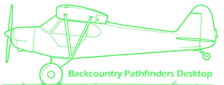

Saisissez la clé API de votre compte Backcountry Pathfinders. Elle est enregistrée localement sur cet ordinateur et envoyée au site à chaque relevé.
Cadrez l'image que vous souhaitez capturer dans MSFS 2024. Une fois prêt, cliquez sur Capture.
Vol terminé. Voici les posers relevés pendant ce vol :
Les posers de ce vol ne seront pas envoyés au site. Les photos restent enregistrées en local.